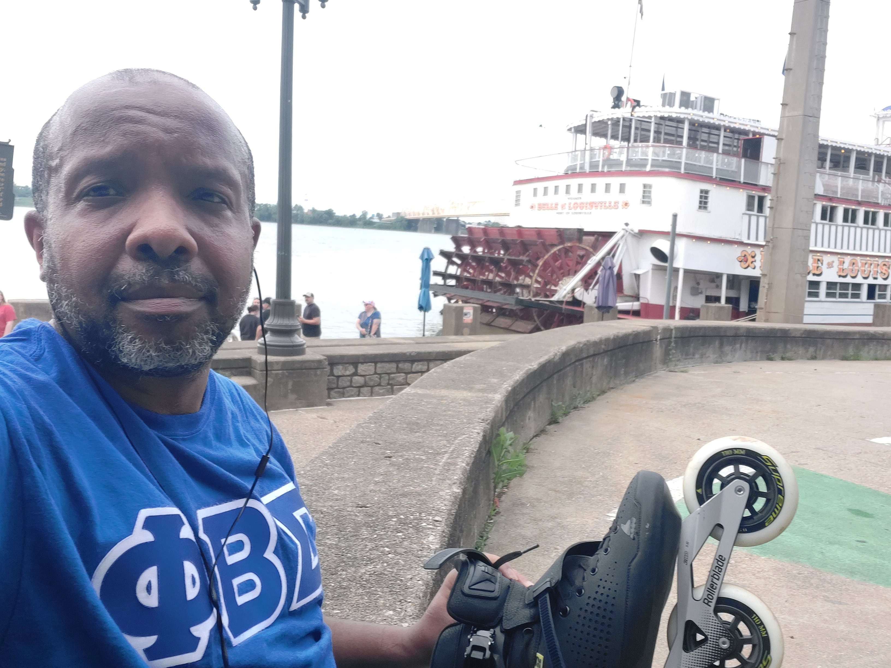

Inline skating in Louisville, KY |
||
|  | ||
I scoped out the downtown area of Louisville, KY, for inline skating before we arrived. I got a general idea of the bike path along the Ohio Riverfront. I was excited about adding this city to my skating roster. However, I discovered that Jack Harlow's inaugural Gazebo Festival was being setup, thus blocking parts of the bike trail. The video shows me strategizing my way around the area. |
||